خلدون عكرمة
من جبلة على الساحل السوري. هنا ما وثّقتُه وكتبتُه: ذاكرةٌ لا أريدها أن تُنسى، وأسئلةٌ لا أريدها أن تُؤجَّل.
23 عملاً منشوراً منذ حزيران 2026
ادخل الأرشيف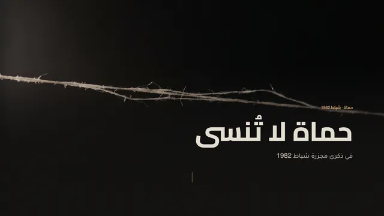
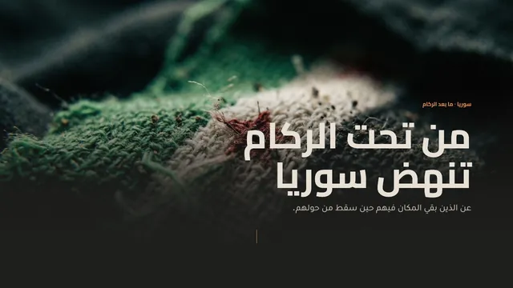
من تحت الركام تنهض سوريا
الركام لا يُعدّ بالأمتار، يُعدّ بالأسماء. عن الذين بقي المكان فيهم حين سقط من حولهم، ويعيدونه اليوم حجراً بعد حجر.
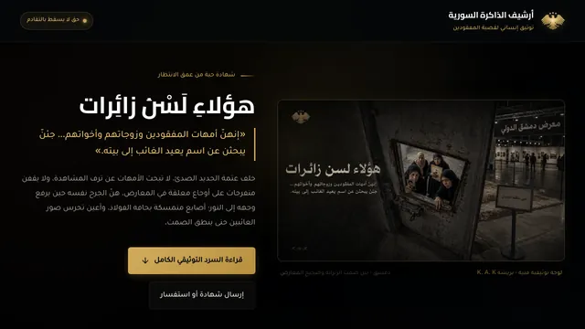
هؤلاء لسن زائرات
أمهات المفقودين وزوجاتهم وأخواتهم، جئن يبحثن عن اسمٍ يعيد الغائب إلى بيته. لا يقفن متفرجات، هنّ الجرح نفسه حين يرفع وجهه إلى النور.
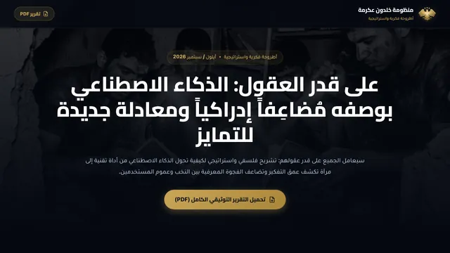
على قدر العقول
الذكاء الاصطناعي لم يأتِ ليساوي بين الناس، جاء ليضاعف ما في عقولهم. أطروحةٌ في الفجوة المعرفية التي يوسّعها بين من يفكّر ومن ينتظر الجواب.
الأرشيف
يظهر 19 من 19 عملاً
أيلول 2026
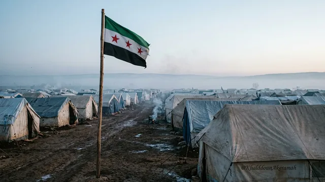
يا من تقولوا أبناء الخيمحسبوا أن الخيام مقابر للأحياء، فكانت مصانع للرجال الذين كسروا قيود نصف قرن من الاستبداد، حتى سقط نظام الدم في 8 كانون الأول 2024.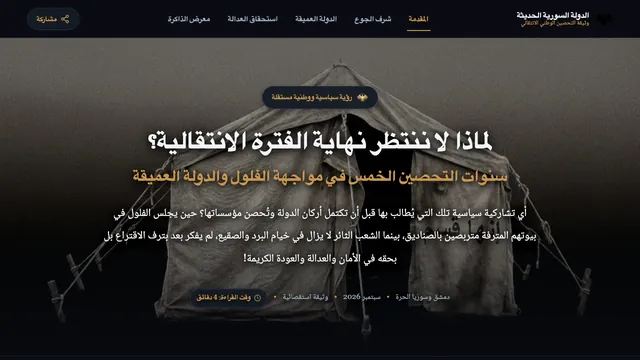
سنوات التحصين الخمسلماذا لا ننتظر نهاية الفترة الانتقالية؟ وثائقي سياسي عن تحصين الدولة في وجه الفلول والدولة العميقة، بشهادةٍ من حصار الغوطة الشرقية.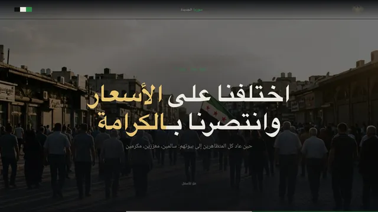
اختلفنا على الأسعار وانتصرنا بالكرامةخرج الآلاف احتجاجاً على الأسعار، وعادوا جميعاً في نهاية اليوم إلى بيوتهم، وناموا بين عائلاتهم وأطفالهم. وثيقةٌ بصرية عن يوم الرابع عشر من أيلول 2026.- على قدر العقولالذكاء الاصطناعي لم يأتِ ليساوي بين الناس، جاء ليضاعف ما في عقولهم. أطروحةٌ في الفجوة المعرفية التي يوسّعها بين من يفكّر ومن ينتظر الجواب.
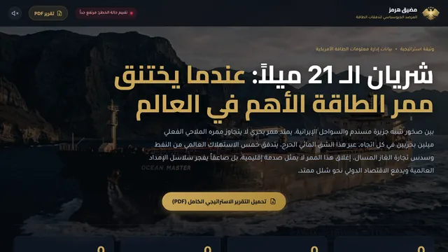
شريان الـ21 ميلاًممرٌّ يعبره خُمس استهلاك العالم من النفط. دراسة في ما يصيب أسواق الطاقة وسلاسل الإمداد إن أُغلق مضيق هرمز، ببيانات EIA ولويدز.- حماة لا تُنسىليلة الثاني من شباط 1982، ثم سبعة وعشرون يوماً من الهجوم على مدينةٍ أزقّتها أضيق من الدبابات. كل واقعةٍ منسوبةٌ إلى مصدرها.
- من تحت الركام تنهض سورياالركام لا يُعدّ بالأمتار، يُعدّ بالأسماء. عن الذين بقي المكان فيهم حين سقط من حولهم، ويعيدونه اليوم حجراً بعد حجر.
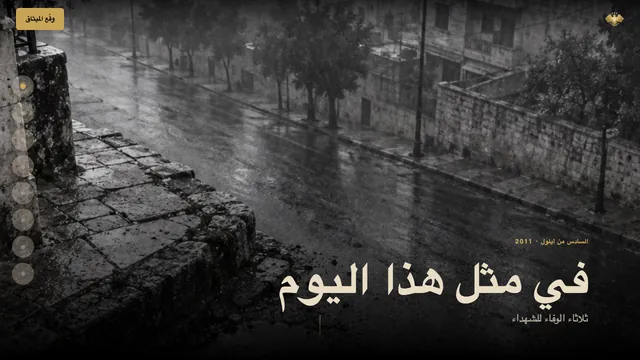
في مثل هذا اليوم: ثلاثاء الوفاء للشهداءالسادس من أيلول 2011. من حمص إلى درعا خرج الأحرار رافعين علم الثورة، وقرّروا بصمت الأقدام ما أعجزه صوت السلاح.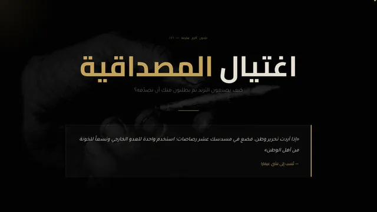
اغتيال المصداقيةكيف يصنعون الترند ثم يطلبون منك أن تصدّقه؟ مقالٌ في الوعي والمعلومة، وفي عدوٍّ يخوض معركته داخل وعي المجتمع نفسه.- هؤلاء لسن زائراتأمهات المفقودين وزوجاتهم وأخواتهم، جئن يبحثن عن اسمٍ يعيد الغائب إلى بيته. لا يقفن متفرجات، هنّ الجرح نفسه حين يرفع وجهه إلى النور.
آب 2026
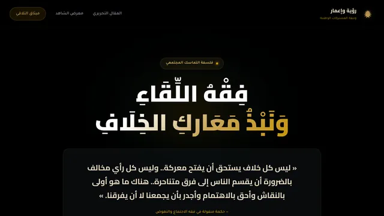
فقه اللقاءفي المنعطفات الكبرى تصير المعارك الجانبية استنزافاً للوقت والجهد والوجدان. أطروحةٌ في أولوية المشتركات، وفي التمييز بين المصيري والهامشي.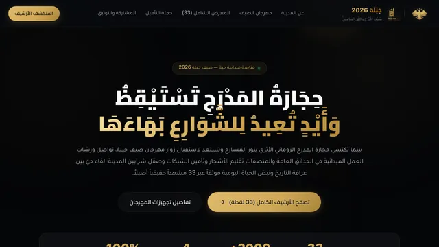
جبلة: صيف المدرّجالمدرّج الروماني يتهيّأ لمهرجان صيف جبلة، والورش تعيد إلى الحدائق والشوارع بهاءها. توثيقٌ بصري في 33 لقطة حقيقية.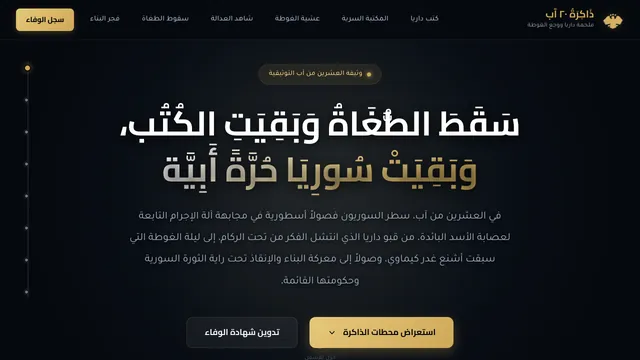
ذاكرة 20 آبشباب داريا ينتشلون الكتب من تحت القصف، وليلة الغوطة التي سبقت مجزرة الكيماوي. متحفٌ رقمي لذاكرة العشرين من آب.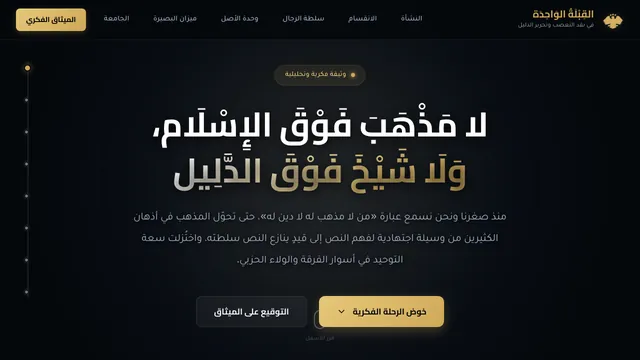
القبلة الواحدةلا مذهب فوق الإسلام، ولا شيخ فوق الدليل. قراءةٌ في تحوّل الاجتهاد البشري من وسيلةٍ لفهم النص إلى قيدٍ ينازعه سلطته.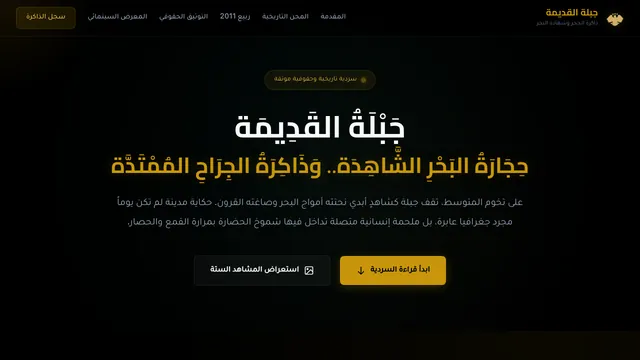
جبلة القديمة: حجارة البحر الشاهدةمن المسرح الروماني والأزقّة الحجرية، إلى محن الزلازل وربيع 2011 وقبضة القمع الأمني. سردٌ إنساني وتاريخي للمدينة وأهلها.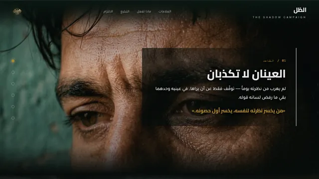
الظلالإدمان لا يسجن الجسد وحده. حملة توعية بصرية تبدأ من العينين، لأنهما لا تكذبان.
حزيران 2026
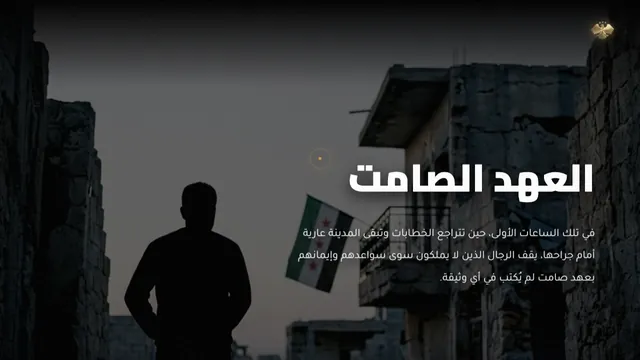
العهد الصامترجالٌ لا يملكون إلا سواعدهم، وعهدٌ لم يُكتب في أي وثيقة. يدٌ تحفظ غبار بيتٍ كان، وجدارٍ سيكون.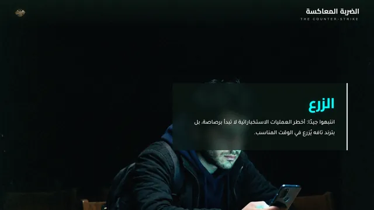
الضربة المعاكسةأخطر العمليات الاستخباراتية لا تبدأ برصاصة، تبدأ بترندٍ تافه يُزرع في الوقت المناسب، فيصير المواطن أداةً في حربٍ نفسية على وطنه.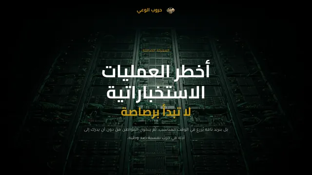
حروب الوعيإغراق الناس بالفضائح والتفاهات، واستنزاف وقتهم، وضرب ثقتهم ببلدهم. دعوةٌ ألّا تصير عقولنا ساحةً لعملياتهم.
لا عمل يطابق بحثك.
أعمال للعملاء
أدوات
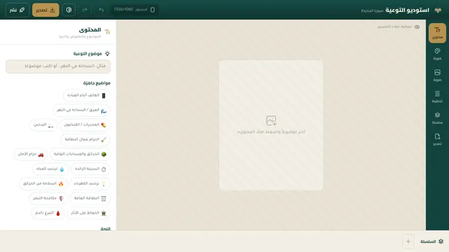
استوديو التوعيةاستوديو لمنشورات السوشيال ميديا وبوستراتها: قصّ الصورة وضبطها، والتحكم بكل نصٍّ وخطٍّ وعنصر، وسبعة مقاسات للمنصات بضغطة، بهوية سوريا الجديدة أو هويتك.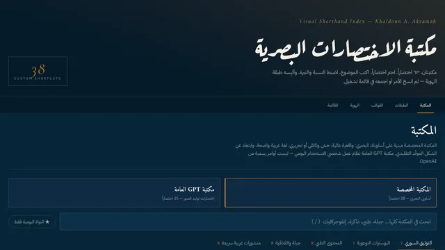
مكتبة الاختصارات البصريةاختصاراتٌ لكتابة البرومبت بأسلوبي: واقعيةٌ عالية وحسٌّ وثائقي ولغة عربية واضحة. اختر بطاقةً فيُحمَّل الاختصار مع مثاله.